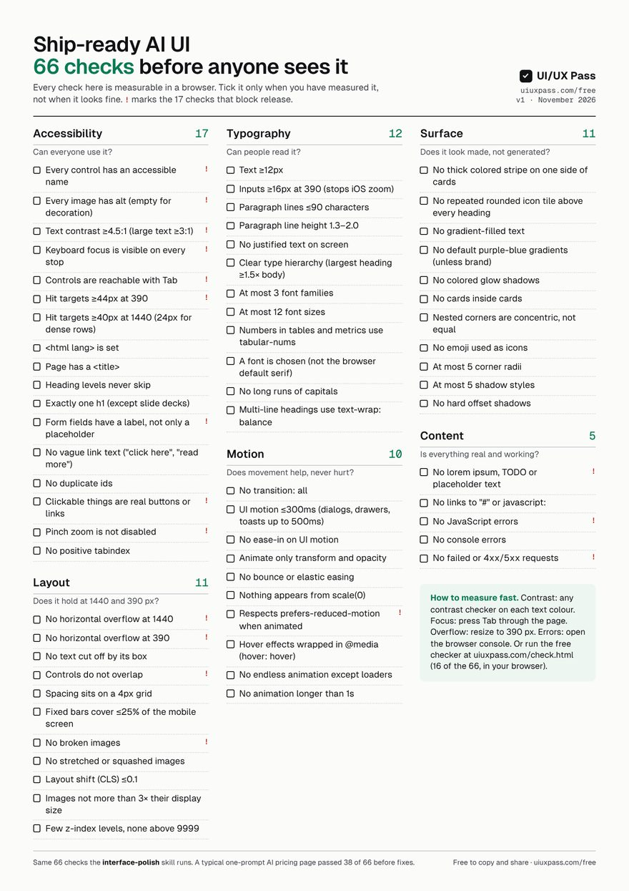
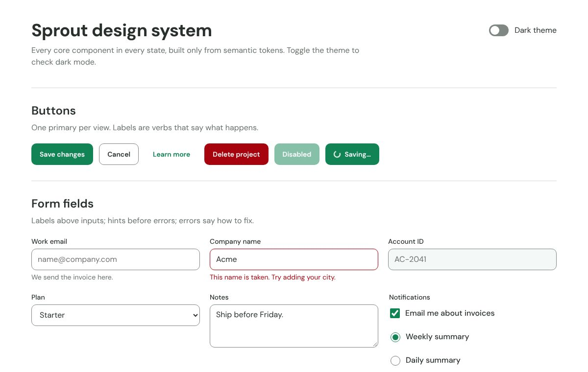

Free tools for checking AI-made UI
AI tools build a page in a minute and miss the same things every time: contrast, focus, phone layout, real content, the template look. Everything here helps you catch them before anyone else does. Free, no email, share it with your team.

Ship-ready AI UI: the 66-point checklist
One A4 page, six groups, 66 checks you can measure in a browser. The 17 that block a release are marked. It is the same list the interface-polish skill runs automatically; on paper it works with any tool.
20 prompts that make Claude check its own UI
Paste one after Claude builds a page. Each one asks for numbers instead of opinions, so the answer is something you can verify.
A prompt still lets the model grade its own work. Prompt 20 helps; a script that measures the page helps more.
- List every text colour and the background behind it, with the WCAG contrast ratio for each pair. Fix every pair under 4.5:1 (3:1 for text 24px+ or 18.66px bold) without changing the brand colour itself.
- List every icon, input border and focus ring colour against its background with its contrast ratio. Anything under 3:1 fails; fix it.
- Find every place where colour alone carries meaning (status, errors, required fields, chart series). Add a word, icon or pattern to each.
- Walk the page in Tab order and list each stop: element, accessible name, and what the focus indicator looks like. Mark any stop where focused and unfocused look the same and fix it with a 2px outline at 3:1.
- List every element with an onclick that is not a <button> or <a href>. Replace each with the right element.
- Open every menu, dialog and popover with the keyboard only. Report where Escape does not close it or focus does not return to the trigger, then fix it.
- At 390px wide, list every element whose right edge goes past 390px, with its width. Fix each one so nothing scrolls sideways.
- At 390px, list every tappable element smaller than 44×44px with its measured size. Enlarge the hit area (padding or a pseudo-element) without enlarging the visual.
- At 390px, list every input with font-size under 16px (iOS zooms on focus). Set them to 16px.
- List every distinct font size, font family and line height on the page with where each is used. Remove anything that is not part of a clear scale; body line height 1.4–1.7.
- Find every text element under 12px and every paragraph wider than 75 characters per line. Fix both.
- Find every number in a table, price or metric. Make them use font-variant-numeric: tabular-nums so columns align.
- For each section that shows data, show me its empty, loading and error state. Write the copy for each: what happened and what to do next.
- List every number, name, logo, testimonial and statistic on the page. Mark each as real (with source) or invented. Remove or label every invented one.
- Rewrite every error message as: what went wrong, why if useful, and how to fix it. No "Oops", no "Something went wrong" alone.
- List every link with text like "click here", "learn more" or "read more" and every link to "#". Give each a destination and text that says where it goes.
- List every transition and animation with its property, duration and easing. Remove "transition: all", anything over 300ms (500ms for dialogs), any ease-in, and anything that animates width, height, top or left.
- Add a prefers-reduced-motion rule that turns off non-essential motion, and show me what changes.
- Name the three things on this page that look most like a template or an AI default (gradient hero, emoji icons, identical icon cards, pill label above the heading, two buttons, glow shadows). Replace each with something specific to this product.
- Before you say it is done: give me a table of what you measured, the number for each, and pass or fail. Do not mark anything as passing that you did not measure.
Contrast and Colour
Keyboard and Focus
Phone Layout
Type and Reading
States and Content
Motion
The Generic AI Look
Sprout: a free, contrast-checked design system
A complete starting system: W3C design tokens, CSS variables with light and dark themes, a Tailwind preset, Figma variable collections, a DESIGN.md that Claude can follow, and a page of every core component in every state.
- Colour pairs passing WCAG 2.2 AA
- 22 of 22light and dark; ratios in contrast.md
- Component page
- 66 of 66automated interface checks, 24 Nov 2026
Primary #1F8A5B, DM Sans, 10 px radius. Free for personal and commercial work. It is one of the three systems in the paid kit; the other two, and the script that builds one from your own brand colour, come with UI/UX Pass.
Want ready-made screens built the same way? Join the free waitlist for measured UI kits: landing, pricing and dashboard, every screen 66 of 66. One email when they ship.

Laws of AI UI
One mistake AI makes in interfaces per card, shown on a real page with the measured number and the fix in code. Each has a square image to post.
State of AI-made UI, November 2026
Every month we give the same brief to popular public design skills running in Claude Code, measure every result with the same 66 checks and 8 template signs, and publish the pages, the scores and the method. We sell skills too, so ours are never in the table.
Checker, free skills and guides
- Free checker16 of the 66 checks, in your browser, about 30 seconds
- UI/UX Pass (free): 2 Claude skillsheuristic-ux-copy-review and self-review
- The same 2 skills on GitHubnpx skills add uiuxpass/free-skills
11 guides
- WCAG 2.2 AA checklist for designers: what you can check in the design file
- Design QA: how to check the build matches the Figma file
- How to write error messages that tell people how to fix the problem
- How to review a design Claude made: a 10-minute checklist
- Colour contrast ratio: what passes WCAG 2.2 and how to fix it fast
- Touch target size: 24 px, 44 pt and 48 dp explained
- How many users do you need for a usability test? Honest numbers
- Is my A/B test result real? A plain guide to significance and sample size
- How to catch design-token drift before it ships
- The screen states designers forget, and how to check every frame
- Before you ship an AI-built interface: a final check in five areas